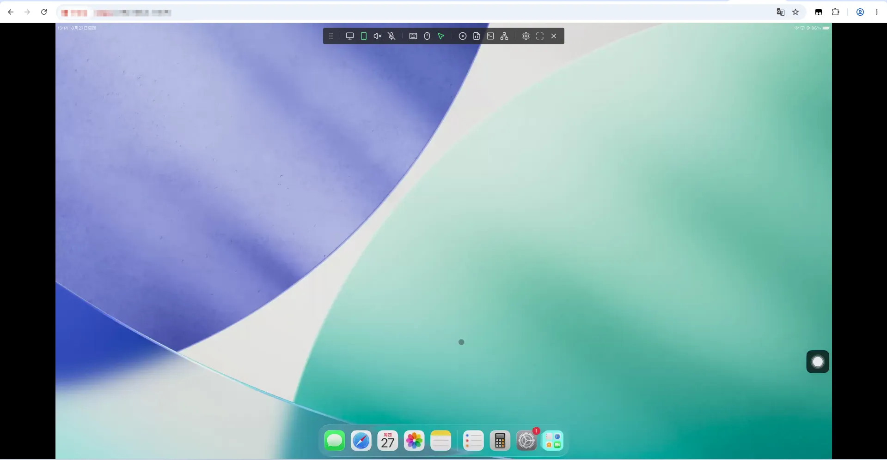
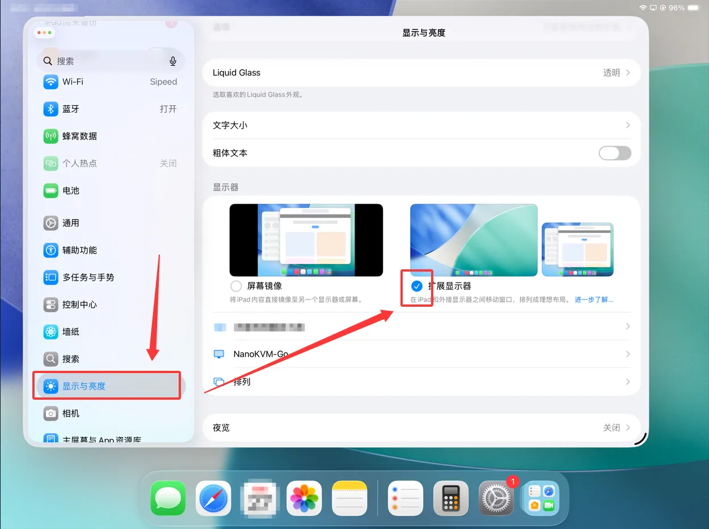
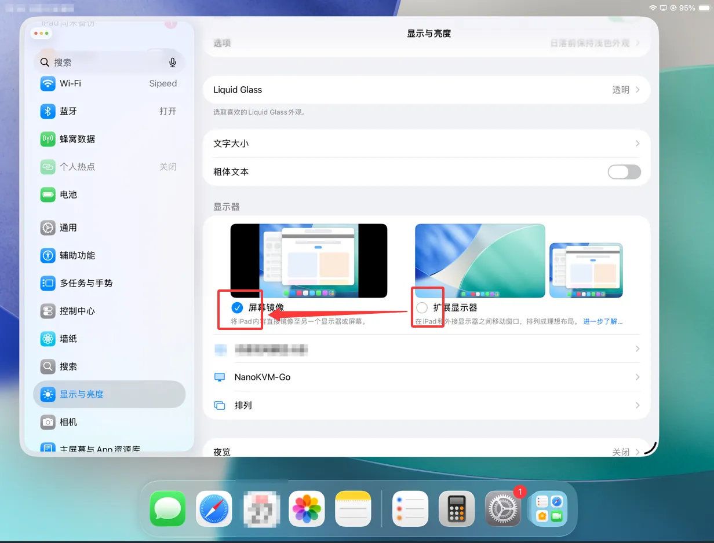
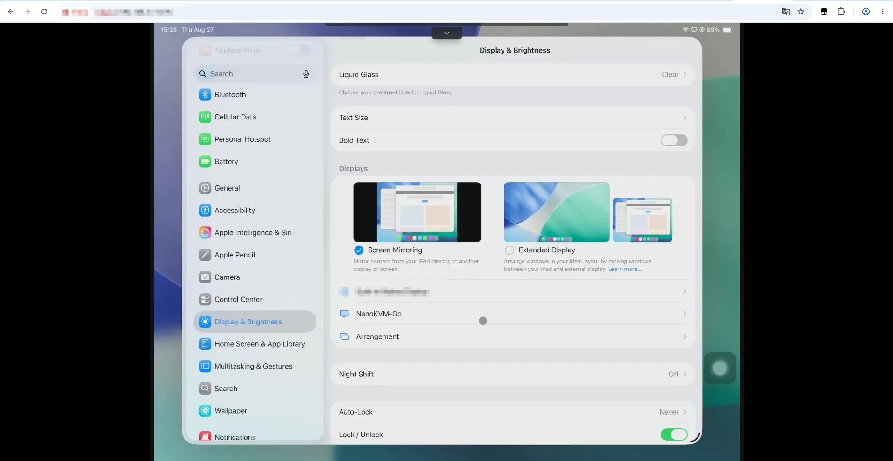
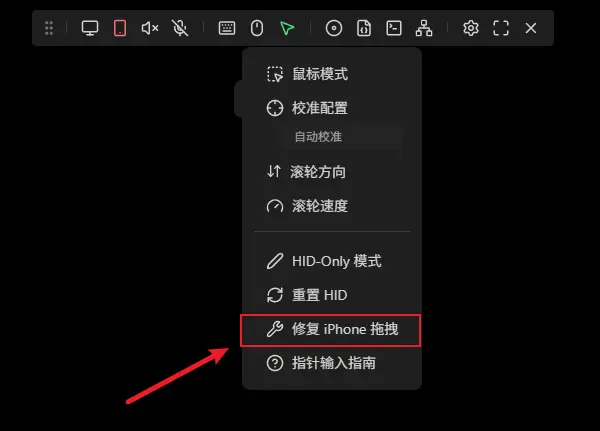
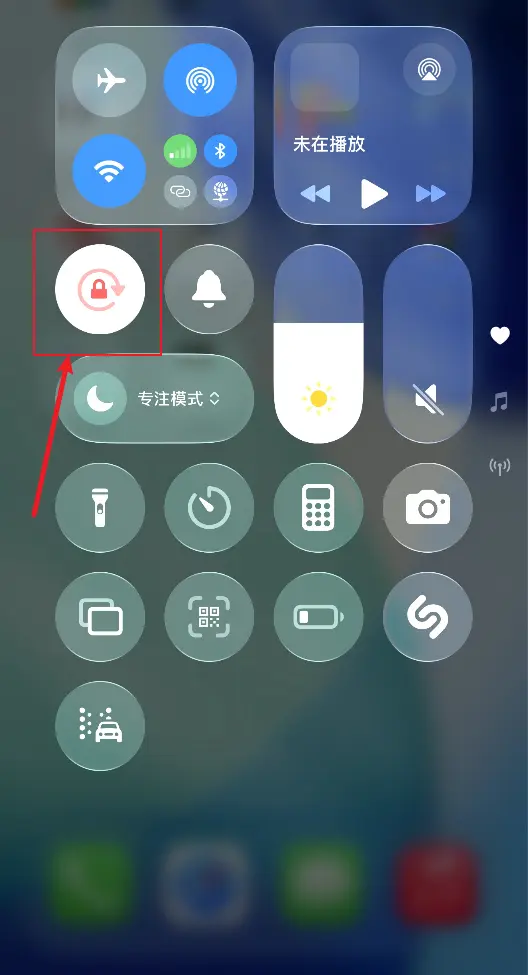

中文
中文F&Q
视频问题
连接到设备后显示“无视频信号”
如果 NanoKVM Go 连接到被控设备后显示“无视频信号”，请确认被控设备的 USB-C 接口支持 USB-C DisplayPort Alt 模式（DP Alt Mode），并且使用的线缆是全功能 USB-C 线。
被控设备的 USB-C 接口必须支持 DP Alt 模式（即能通过 USB-C 口输出 DP 信号），且线缆为全功能 USB-C 数据线，NanoKVM Go 才能获取到视频信号。如果接口不支持视频输出，或使用的只是普通充电线，则无法显示画面。
3840 × 2160 @ 50 Hz EDID 目前为 Beta
3840 × 2160 @ 50 Hz EDID 目前仍是实验性功能。该模式已经可以使用，但部分设备可能存在兼容性问题，画面也可能不稳定。如果遇到异常，建议切换到 3840 × 2160 @ 30 Hz 或更低分辨率的 EDID。
设置 EDID 后，NanoKVM Go 屏幕上显示的分辨率与设置的对不上
如果设置完 EDID 后，NanoKVM Go 屏幕上显示的画面分辨率与设置的 EDID 不一致，通常是因为被控设备选择的是缩放后的显示效果，而不是 EDID 中声明的真实输出模式。
操作系统中看到的分辨率不一定都代表真实的视频输出分辨率。有些选项只是系统缩放后的显示效果，即使看起来是目标分辨率，NanoKVM Go 屏幕上显示的画面仍是缩放后的效果。
请按以下步骤设置真实输出分辨率：
- 确认目标分辨率和刷新率组合存在于当前 EDID 的声明列表中。即使操作系统提供了某个分辨率，如果它不是该 EDID 声明的真实输出模式，也可能无法得到想要的效果。
- Windows：使用
设置→系统→屏幕→高级显示器设置→ 选择NanoKVM-Go→显示器适配器属性→列出所有模式，在有效模式列表中选择表格中列出的目标分辨率和刷新率。 - macOS：打开
系统设置→显示器，开启显示所有分辨率。优先选择带有“低分辨率”标记且分辨率和刷新率组合存在于 EDID 列表中的选项，并确认刷新率匹配。
更多说明和分辨率对照表，请参考分辨率与 EDID 设置。修改 EDID 后，被控设备可能会短暂黑屏、重新识别显示器或重新排列窗口，这属于正常现象。
鼠标能动但点击程序没有反应（多显示器场景）
如果被控设备同时连接了物理显示器和 NanoKVM Go，在 NanoKVM 网页端控制被控设备时出现鼠标光标能移动，但点击程序或执行操作后画面没有反应，通常是主屏幕设置的问题。
被控设备有多个屏幕时，会有一个主屏幕（Primary Display）。如果主屏幕是那台物理显示器，而 NanoKVM Go 只是扩展屏，那么你点击的窗口、菜单和程序界面实际上会出现在主屏幕（物理显示器）上。NanoKVM Go 采集到的只是扩展屏的画面，所以这些操作产生的画面变化在 NanoKVM 网页里看不到，感觉像"点击没反应"，但鼠标光标本身是能移动的。
解决办法：
- 在被控设备的系统显示设置中，把 NanoKVM Go 设为主屏幕（Primary），或把两台屏幕设置为镜像显示（Mirror）。
- 设置完成后，点击程序等操作产生的画面就会显示在 NanoKVM 采集的画面上。
Windows：
设置→系统→屏幕→ 选择显示器 → 勾选"设为主显示器"。
macOS：系统设置→显示器→ 在显示器排列中设置主显示器，或使用"镜像显示器"。
iOS 设备在视频应用播放流媒体时看不到本地视频画面
如果 iPhone/iPad 在通过视频应用（如 YouTube、Netflix 等）播放流媒体视频时，本机屏幕上看不到视频画面（没有本地视频帧），这是因为 iOS 设备连接到屏幕镜像设备后，这些视频应用会默认通过 AirPlay 将视频输出到外接设备。
也就是说，视频画面被 AirPlay 输出到了 NanoKVM Go（屏幕镜像设备）这一侧，而 iOS 设备本机不再显示该视频的本地画面帧。这是 iOS 系统层面的默认行为，无法在系统中关闭或禁用。
iPad Pro 连接后网页端仅显示扩展桌面
部分 iPad Pro 机型支持扩展显示功能，包括 12.9 英寸 iPad Pro（第 5 代及更新机型）以及 11 英寸 iPad Pro（第 3 代及更新机型）。连接 NanoKVM Go 后，iPad 可能默认使用“扩展显示器”模式，此时 NanoKVM Go 网页端采集的是扩展桌面，通常只显示桌面背景，不显示 iPad 主屏幕上的应用窗口。

如果想在 NanoKVM Go 网页端查看 iPad 的当前主屏幕内容，请按以下步骤操作：
在 iPad 上打开“设置 > 显示与亮度”

在“显示与亮度”选项中，将 NanoKVM Go 的显示模式从“扩展显示器”切换为“屏幕镜像”

切换完成后，NanoKVM Go 网页端将显示 iPad 当前的主屏幕内容

键鼠与输入问题
被控设备是手机，锁屏后无法显示密码输入键盘
如果被控设备是手机（苹果或安卓），当手机屏幕锁定时，NanoKVM Go 网页端可能无法显示密码输入键盘。此时不需要在手机上唤起键盘，可以直接用控制端（NanoKVM 网页端）的键盘直接输入密码。
如果手机锁屏后需要上滑才能到达输入密码的界面，可以先在控制端按下空格键（等效于上滑动作），进入密码输入界面后，再直接输入密码即可。
被控设备是 iPhone 时，鼠标一直处于按下（拖拽）状态
如果被控设备是 iPhone，使用鼠标控制时可能出现鼠标一直处于按下状态（类似一直拖拽）的效果。这是因为连接 iPhone 后未正确处理触摸手势。
请点击网页控制页面悬浮栏中的鼠标样式按钮，选择 修复 iPhone 拖拽 来修复该问题。连接 iPhone 后每次连接成功都需要点击该选项，否则可能出现鼠标一直按下的问题。

iPhone/iPad 竖屏或横屏镜像时，鼠标指针偏离对齐
当 iPhone/iPad 以竖屏或横屏镜像显示时，即使在控制台调整了屏幕方向，控制端的鼠标指针仍可能无法与画面精准对齐。
这是因为 iPhone/iPad 的精确光标跟踪需要设备陀螺仪的方向与当前显示屏幕的方向完全一致。在远程控制过程中，系统可能无法正确检测到当前的陀螺仪状态，从而导致鼠标指针偏移。
解决办法：
请在 iPhone/iPad 上开启竖排方向锁定/旋转锁定（Orientation Lock），确保光标追踪的准确性。

iPad Pro 修复 iPhone 拖拽后无法控制鼠标
iPad Pro 修复 iPhone 拖拽后，有鼠标显示但是无法控制鼠标，这是由于辅助触控没有开启，具体开启方法可以通过手机连接注意事项 来开启
音频问题
连接 iOS 后无法调整音量
受 iOS 系统限制，一旦 iPhone/iPad 连接到被系统识别为音频输出的屏幕镜像设备（如 NanoKVM Go），系统原生音量控制将不可用。
这是 iOS 对外部音频输出设备的正常行为限制，而非 NanoKVM Go 故障。若需控制音量，请在被控设备（iPhone/iPad）或播放内容的 App 内部调整，或使用外接音频设备调节音量。
反馈方式
若上述方法不能解决异常，请在论坛、GitHub 或 QQ 群说明您购买的型号和遇到的问题，我们会耐心解答
QQ 交流群: 703230713